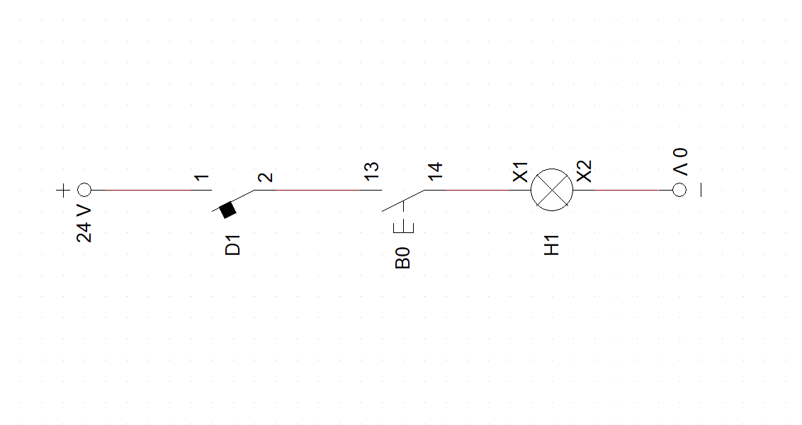
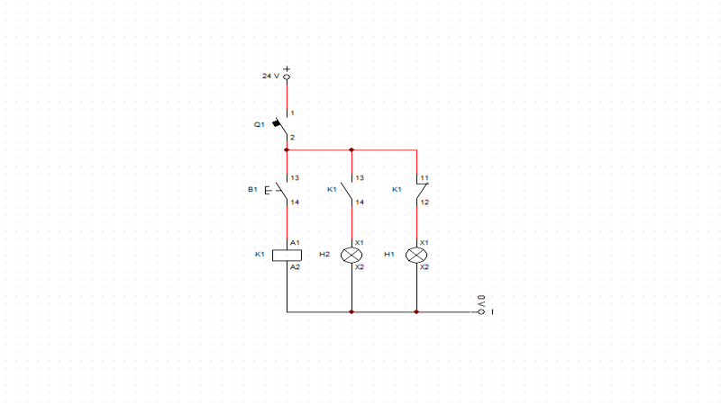
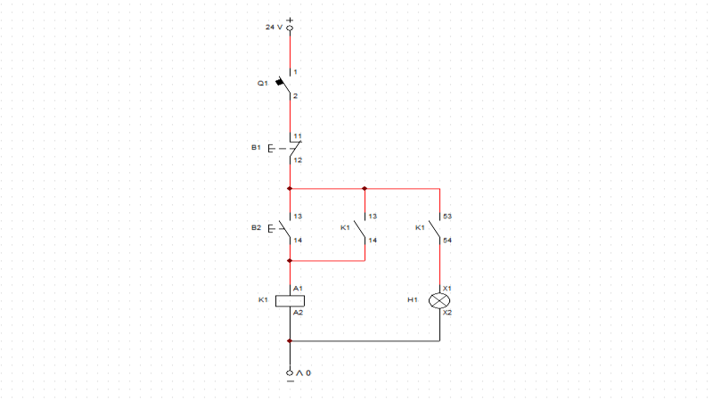
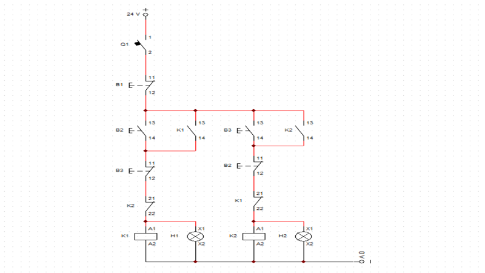
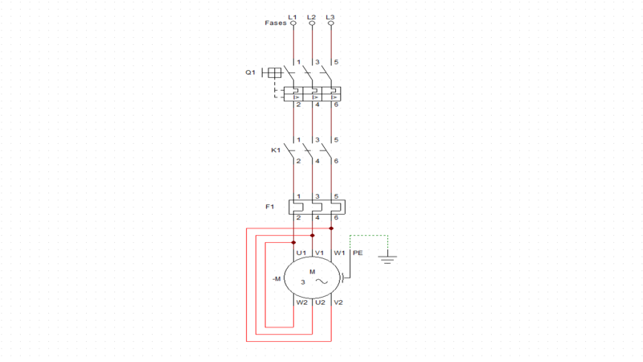
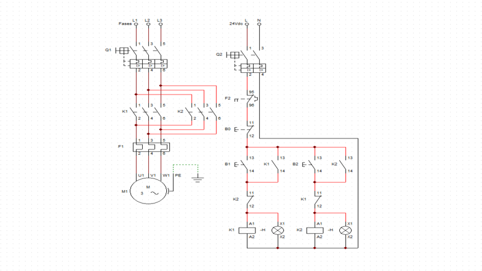
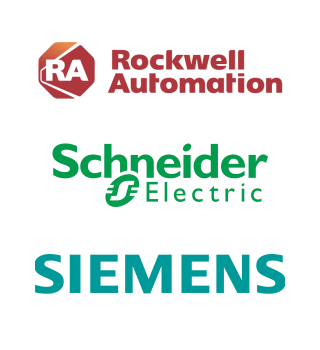

Profissões
O profissional de Cibersistemas para Automação desenvolve e integra sistemas automatizados industriais utilizando programação, eletrônica e tecnologias da Indústria 4.0.
Informações
O mercado industrial hoje une a automação, os projetos com CLP e os cibersistemas para transformar fábricas comuns em ecossistemas inteligentes conectados à Indústria 4.0. Nessa integração, a elétrica funciona como a estrutura física, o CLP comanda os movimentos das máquinas e os cibersistemas levam os dados de campo com segurança para a nuvem, otimizando a produção em tempo real.
Nesse cenário tecnológico, os profissionais se dividem em funções estratégicas e complementares:
Engenheiro de Automação Industrial
Responsável por projetar o funcionamento de linhas de produção, configurar robôs, sintonizar malhas de controle e otimizar processos para maior eficiência e menor desperdício.
Projetista Elétrico Industrial
Especialista focado no desenho de painéis elétricos, especificação de componentes de potência (como inversores e contatores) e garantia de conformidade com as normas de segurança elétrica.
Programador de CLP e IHMs
Profissional que desenvolve as lógicas de intertravamento e sequenciamento (em linguagens como Ladder) que controlam o maquinário, além de criar as telas de interface para os operadores de campo.
Circuitos
O projeto de circuitos elétricos ganha vida no CADe SIMU, onde você desenha e testa a potência dos motores e a lógica dos comandos. O software simula tudo em tempo real, permitindo validar lógicas em Ladder e intertravamentos antes da montagem física, o que evita curtos-circuitos e garante que o painel funcione direitinho.



Selo
Circuito elétrico no CADe_SIMU, com contato selo, botão NF para desligar o led e o selo com contator para manter energizado.
Arquivo
Reversão
Circuito elétrico no CADe_SIMU, de comando de reversão, quando clica em um botão liga o led 1 e quando clica no botão 2 liga o led 2 e desliga o led 1.
Arquivo
Potência
Circuito de potência para ligar um motor elétrico trifásico, com disjuntor, contator e relé térmico.
Arquivo
Comando e Potência
Circuito de comando e potência com reversão, trocando uma das fases de saída conseguimos reverter o giro do motor para anti-horário.
ArquivoExplicações
Modelos 3D
Empresas
As principais empresas que atuam no setor de automação industrial são referências em inovação, tecnologia e desenvolvimento de soluções inteligentes para a indústria. No cenário atual, empresas especializadas em redes industriais, sistemas ciber-físicos e automação continuam se destacando pela qualidade e eficiência de seus produtos e serviços.
A Siemens, a Schneider Electric e a Rockwell Automation são empresas reconhecidas mundialmente no segmento de cibersistemas para automação, oferecendo soluções tecnológicas voltadas para controle, monitoramento e otimização de processos industriais inteligentes. Suas atuações se destacam pela inovação, confiabilidade e integração de tecnologias de ponta da Indústria 4.0.
SIEMENS: Empresa global líder em automação e digitalização industrial. Atua fortemente no desenvolvimento de Cibersistemas através da integração de CLPs de última geração (linha S7-1500), softwares de simulação como o TIA Portal, internet das coisas (IoT) e gêmeos digitais para fábricas inteligentes.
SCHNEIDER ELECTRIC: Multinacional especialista em gestão de energia e automação industrial. Destaca-se no conceito de cibersistemas com a sua arquitetura EcoStruxure, que conecta desde sensores e CLPs até sistemas de controle em nuvem, focando em eficiência energética, sustentabilidade e segurança digital.
ROCKWELL AUTOMATION: Gigante do setor focada exclusivamente em automação industrial e transformação digital. É referência no desenvolvimento de sistemas de controle integrados (linha Allen-Bradley), redes industriais EtherNet/IP e plataformas de software que conectam o chão de fábrica à TI de forma segura.
